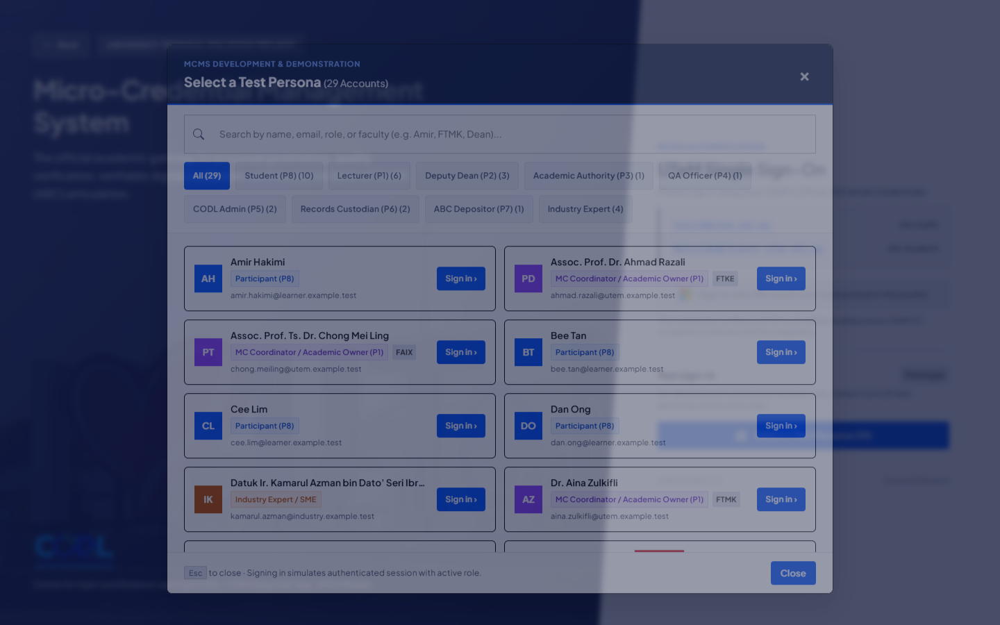

#070d19), elevated dark slate panels (#0f172a), and Electric Cobalt accents (sys_dark_theme_dashboard.png).MCMS strictly implements the Linear-Precision v3 design specification (DESIGN.md): modern geometric typography (Plus Jakarta Sans), crisp black card outlines (#090a0f), high-contrast Deep Cobalt Navy navigation (#0b1a3d), Electric Cobalt accents (#0052ff), an accessible protruding pull-tab latch handle, multi-state linear progress steppers, and a native dual Light / Dark theme architecture. {{fig:shelldark}} and {{fig:shellcollapsed}} show the operational interface across themes and states.
#070d19), elevated dark slate panels (#0f172a), and Electric Cobalt accents (sys_dark_theme_dashboard.png).
#btnSidebarPullTab) with animated flipping chevron mounted on the Deep Cobalt Navy sidebar boundary, allowing frictionless collapsing and expansion to maximise analytical viewport width (sys_sidebar_collapsed.png).Linear-Precision v3 colour tokens
Plus Jakarta Sans is the primary geometric typeface; JetBrains Mono / IBM Plex Mono is used strictly for identifiers, cryptographic hashes, verification codes, and tabular values. Every metric in forms, KPI strips, and financial summaries uses tabular figures.
Multi-step institutional governance processes (such as Curriculum Proposal Endorsement and Credit Transfer Equivalence Evaluation) employ the .linear-stepper component ({{fig:stepperdemo}}):
#090a0f) enclosing a white checkmark icon (✓), linked by a crisp solid progress line.#0052ff) with subtle radial pulse ring, displaying the 2-digit numeral (e.g. 03) and bold blue stage title.04) and muted label indicating future workflow requirements.
p1_proposal_workspace.png).Linear-Precision v3 component catalogue